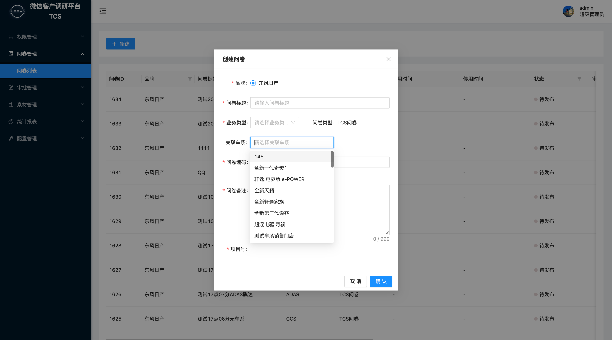
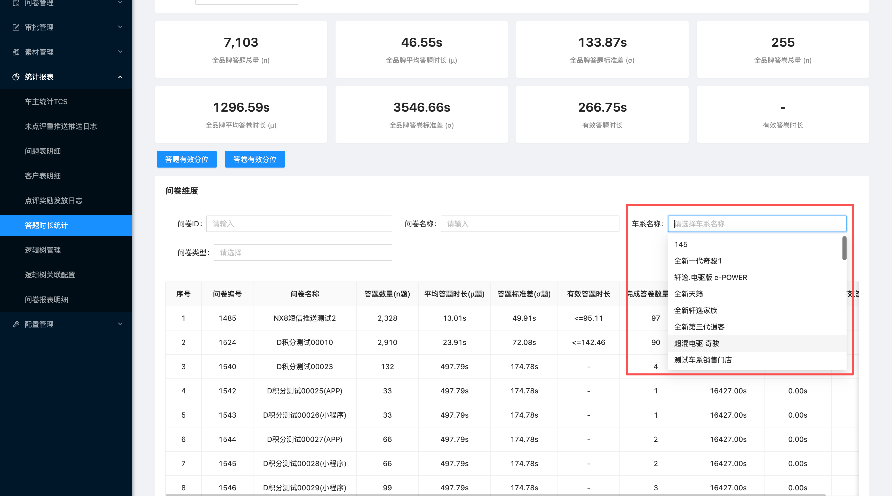
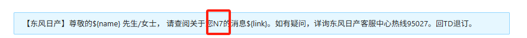
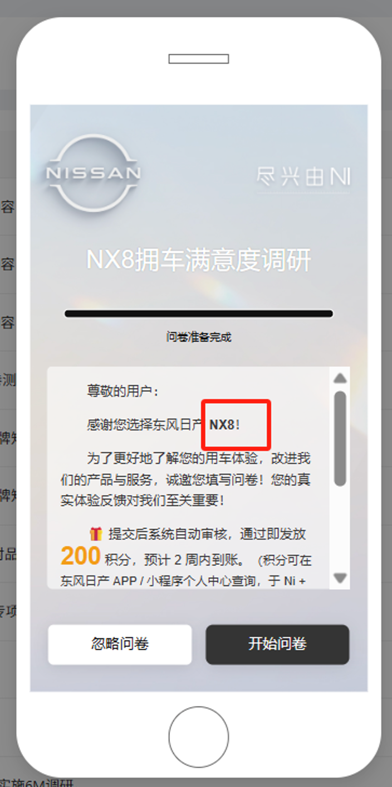

业务变更
车型科授意运营侧，在营销平台将 N7 直接改名为 新 N7，没有新建车系。
问题背景
车型科授意运营侧，在营销平台将 N7 直接改名为 新 N7，没有新建车系。
两个名称沿用了同一个基准车系编码；问卷后台恰好通过该编码获取车系。
营销平台接口只返回 新 N7，问卷后台的车系下拉列表中不再显示 N7。
说明本次获取的车系与推送人群关联的车系无关，不影响人群圈选逻辑。
问题梳理
前两项为当前已用场景，
后两项为拟使用场景。
当前已用
在“关联车系”下拉框中选择问卷对应车系；缺少 N7 后，旧车系问卷无法正确关联。

当前已用
问卷维度列表与车型维度列表，都通过“车系名称”进行筛选。

拟使用
短信内容中需要动态带入目标车系名称。

拟使用
问卷开始页的富文本需展示用户对应车系。

解决方案
实施方式最小改动
正常获取当前车系列表，保留“新 N7”。
将 N7 作为补充数据写入可用车系列表。
所有车系下拉、筛选与文本场景恢复可用。
交付后可达成
在上述 5 个操作节点中，均能检索、选择或展示 N7；同时“新 N7”保持正常可用。
本方案仅补齐问卷平台的车系基础数据，不修改营销平台原数据，不改变推送人群与车系的关联逻辑。